Für den sicheren Betrieb einer elektrischen Anlage mit Stromerzeuger ist es zunächst erforderlich zu klären, welches Versorgungssystem (TN, TT oder IT) durch die Bauweise des Stromerzeugers möglich oder vorgegeben ist und welche Schutzmaßnahmen erforderlich sind. Besonders zu beachten ist hierbei, ob aktive Leiter in die Erdung einbezogen sind, da hiervon direkt die Schutzmaßnahmen abhängig sind. Dabei sind auch die Umgebungs- und Einsatzbedingungen zu berücksichtigen (siehe auch Abschnitt 3.4).
Wird der sichere Betrieb durch Aufbau und Funktion des Stromerzeugers gewährleistet, kann dieser von elektrotechnischen Laien in Betrieb genommen werden, da keine definierte Erdverbindung hergestellt werden muss und keine Prüfung vor Inbetriebnahme erforderlich ist (siehe Abschnitt 5.1). Praxisbeispiele für Anschlusskombinationen sind in Anhang 7 dargestellt.
Wird hingegen ein Stromerzeuger eingesetzt, bei dem durch Aufbau und Funktion z. B. der Sternpunkt des Generators unter definierten Bedingungen geerdet werden muss und Errichtungsprüfungen durchzuführen sind, so handelt es sich um die Errichtung einer elektrischen Anlage, die von einer Elektrofachkraft vorgenommen werden muss (siehe Abschnitt 5.2).
Entsprechend der Ausrüstung der Stromerzeuger können die Abgänge entweder Übergabepunkt oder Anschlusspunkt sein. Elektrische Betriebsmittel auf Bau- und Montagestellen sind grundsätzlich durch RCDs zu schützen.
Die Länge der Anschlussleitung ist möglichst kurz zu halten, weil die meisten Isolationsfehler durch Beschädigungen an Anschlussleitungen verursacht werden, und mit zunehmender Länge ungeschützt verlegter Leitung die Fehlerwahrscheinlichkeit steigt.
Werden vor Drehstrom-Steckdosen mit einem Bemessungsstrom In > AC 32 A RCDs mit einem Bemessungsdifferenzstrom IΔn > 30 mA verwendet, z. B. für Krane, sind die Anschlussleitungen geschützt zu verlegen.
Anmerkung:
Bei längeren Leitungen kann außerdem in Verbindung mit einem zu geringen Leitungsquerschnitt der Leitungswiderstand so hoch werden, dass die Überstrom-Schutzeinrichtungen im Falle eines zweipoligen Isolationsfehlers (Kurzschluss) nicht mehr auslösen.
Zur Inbetriebnahme ist eine Elektrofachkraft nicht erforderlich.
Eine Sichtkontrolle durch den Benutzer oder die Benutzerin vor jeder erneuten Inbetriebnahme ist ausreichend. Zu wiederkehrenden elektrotechnischen Prüfungen ist Abschnitt 6.2.4 zu beachten.
Der Stromerzeuger muss entsprechend Abschnitt 4.2 ausgeführt sein, d. h. mit Anschlussmöglichkeit für den Schutzpotentialausgleich. Eine Verbindung des Schutzpotentialausgleichs mit Erde, z. B. durch einen Erdspieß, ist hier nicht erforderlich.
Steckdosen an Stromerzeugern der Ausführung "A" sind Übergabepunkte. Ohne zusätzliche Schutzmaßnahme darf an diesen Stromerzeugern nur ein einzelnes Verbrauchsmittel angeschlossen werden, weil im Fall eines ersten Fehlers, z. B. Leitungsbeschädigung oder eingedrungene Nässe in einer Steckvorrichtung, eine Körperdurchströmung nicht möglich ist. Ein Schutzpotentialausgleich (PB) ist bei nur einem angeschlossenen Verbrauchsmittel nicht erforderlich (siehe Abbildung 7).
Sollen weitere Verbrauchsmittel angeschlossenen werden, sind zusätzliche Schutzmaßnahmen erforderlich (siehe Abschnitt 5.1.2).
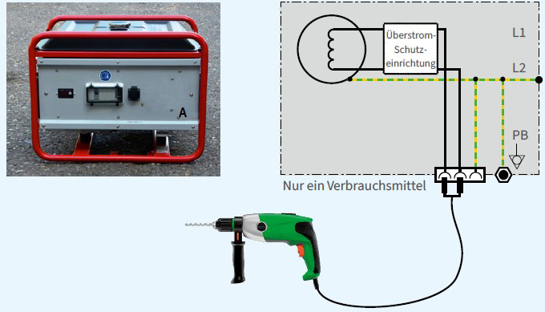
Abb. 7 Stromerzeuger ohne Erdungsanschluss mit nur einer Steckdose und nur einem angeschlossenen Verbrauchsmittel
Mit ungeerdeten Stromerzeugern wird ein gegen Erde isoliertes Stromversorgungssystem erzeugt, bei dem der Schutzpotentialausgleich nicht mit Erde verbunden sein muss. Hierbei handelt es sich nicht um "Schutztrennung" im Sinne von VDE 0100-410.
Anmerkung:
"Schutztrennung mit mehr als einem Verbrauchsmittel" unter den Bedingungen nach VDE 0100-410 ist auf Bau- und Montagestellen in der Regel nicht realisierbar, weil die Anforderungen von Anhang C.3 dieser Norm nicht eingehalten werden können.
Der Schutz gegen elektrischen Schlag bei Anschluss mehrerer Verbrauchsmittel wird durch die nachfolgend aufgeführten Maßnahmen erreicht.
Jedem Verbrauchsmittel, bis auf eines, wird eine RCD zugeordnet. Fließt im Fall eines zweiten Isolationsfehlers an einem anderen Außenleiter in einem anderen Stromkreis ein Fehlerstrom, wird dieser von mindestens einer RCD erkannt und mindestens einer der fehlerbehafteten Stromkreise wird abgeschaltet (siehe Abbildung 8). Vor der Wiederinbetriebnahme sind alle Fehler zu beheben.
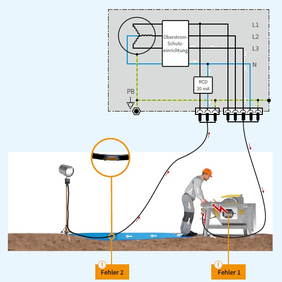
Abb. 8 Fehlerstromfluss bei zwei Fehlern in zwei unterschiedlichen Stromkreisen
Zwei Ausführungen sind möglich:
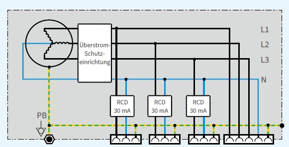
Abb. 9 Stromerzeuger der Ausführung "B" mit einer 30-mA-RCD vor der zweiten und jeder weiteren Steckdose
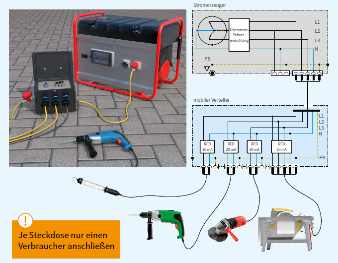
Abb. 10 Stromerzeuger mit nachgeschaltetem Verteiler, in dem jeder Steckdose eine RCD vorgeschaltet ist
Beim Einsatz von Stromerzeugern der Ausführungen "A" und "B":
| Hinweis |
| Für beide zuvor beschriebenen Ausführungen gilt: Angeschlossene Mehrfachsteckdosen, z. B. Leitungsroller, benötigen wiederum für jede Steckdose eine eigene RCD oder PRCD mit einem Bemessungsdifferenzstrom IΔn ≤ 30 mA. |
Ein Verbrauchsmittel darf direkt angeschlossen werden. Weitere Verbrauchsmittel müssen jeweils über einen separaten Trenntransformator angeschlossen werden (siehe Abbildung 11).
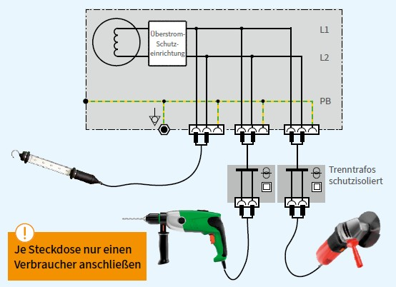
Abb. 11 Stromerzeuger mit mehreren Anschlussmöglichkeiten und mehreren Verbrauchsmitteln, ein Verbrauchsmittel direkt und zwei Verbrauchsmittel über Trenntransformatoren angeschlossen
In Bereichen mit begrenzter Bewegungsfreiheit in leitfähiger Umgebung stellt diese Maßnahme eine bewährte Möglichkeit dar, mehrere Verbrauchsmittel an einem Stromerzeuger zu betreiben (siehe Abschnitt 5.4).
Die Isolationsüberwachung erfolgt zwischen den aktiven Leitern und dem Schutzpotentialausgleichsleiter. Alle Körper von Geräten der Schutzklasse I müssen in einen Schutzpotentialausgleich eingebunden sein. Dieser wird durch die Schutzleiter in den Anschlussleitungen der Verbrauchsmittel realisiert.
Eine IMD nach VDE 0413-8, siehe Abbildung 12, muss beim Absinken des Isolationswiderstandswertes unter 100 Ω/V innerhalb 1 s eine Abschaltung bewirken (siehe VDE 0100-551, Abschnitt 551.4.5).
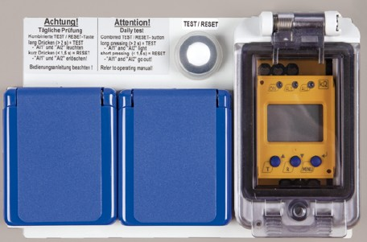
Abb. 12 IMD mit Prüftaste und zugeordneten Steckdosen
Weil für die Ausführungen "A" und "B" eine Verbindung des Schutzpotentialausgleichs mit Erde, z. B. durch einen Erdspieß, nicht erforderlich ist, kann ein Fehler gegen die leitfähige Umgebung, z. B. Erdreich, durch die Isolationsüberwachung nicht in jedem Fall erkannt werden. Daher ist in jedem Fall für das zweite und jedes weitere Verbrauchsmittel eine eigene 30-mA-RCD entsprechend Abschnitt 5.1.2.1 erforderlich!
Alternativ kann auch das zweite und jedes weitere Verbrauchsmittel über einen separaten Trenntransformator angeschlossen werden (siehe auch Abschnitt 5.1.2.2).
Eine Elektrofachkraft muss das Versorgungssystem (TN, TT oder IT) festlegen, die erforderliche Schutzmaßnahme auswählen und deren Wirksamkeit prüfen.
Im TN-System muss der Generatorsternpunkt – oder bei nicht vorhandenem Sternpunkt ein Außenleiter – geerdet werden. Deshalb muss der Stromerzeuger mit einem Erdanschlusspunkt ausgerüstet sein (siehe Abbildung 13).
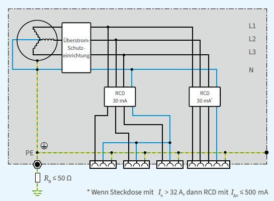
Abb. 13 Stromerzeuger mit 30-mA-RCDs als Anschlusspunkt im TN-S-System
Der Erdungsleiter muss an die Leistungsdaten der Anlage angepasst sein, darf jedoch einen Querschnitt von 6 mm² nicht unterschreiten. Um ein sicheres Auslösen der RCDs auch bei trockenen Böden zu gewährleisten, muss der Erdungswiderstand RB möglichst klein sein. Auf Bau- und Montagestellen ist ein Wert von 50 Ω praktikabel und ausreichend (siehe Abbildung 15).
Die Wirksamkeit der Schutzmaßnahme ist durch eine Elektrofachkraft zu überprüfen.
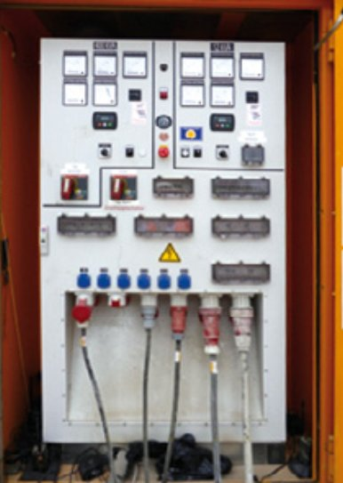
Abb. 14 Anschlussfeld eines Stromerzeugers mit integrierten RCDs
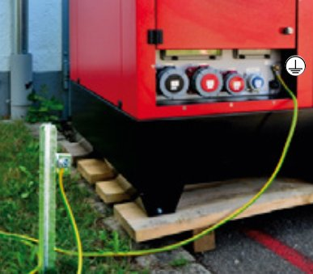
Abb. 15 Stromerzeuger mit Erdungsanschluss und Erdspieß
Wird ein Stromerzeuger ohne integrierte zusätzliche Schutzmaßnahme gegen elektrischen Schlag eingesetzt, oder ist eine solche Schutzmaßnahme nicht erkennbar (siehe auch Abschnitt 3.1), darf dieser lediglich als Übergabepunkt genutzt und es dürfen keine Verbrauchsmittel direkt angeschlossen werden (siehe Abbildung 16).
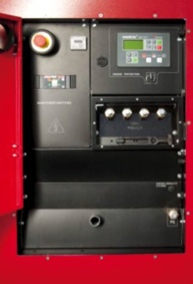
Abb. 16 Stromerzeuger mit Überstromschutz, aber ohne integrierte Maßnahmen zum Personenschutz
Um einen Anschlusspunkt im Sinne der DGUV Information 203-006 zu schaffen, muss eine Elektrofachkraft die notwendigen Maßnahmen zum Schutz gegen elektrischen Schlag gemäß VDE 0100-410 und die erforderlichen Prüfungen festlegen. Sofern mit begrenzter Bewegungsfreiheit in leitfähiger Umgebung gearbeitet werden muss, ist zusätzlich die DGUV Information 203-004 zu beachten.
Geerdete Systeme sind durch Elektrofachkräfte zu errichten, weil die Funktion der Schutzmaßnahmen nach VDE 0100-410 von der Niederohmigkeit der Erdverbindungen (Erdspieß) abhängt. Um ein sicheres Auslösen der RCDs auch bei trockenen Böden zu gewährleisten, muss der Erdungswiderstand möglichst klein sein. Auf Bau- und Montagestellen ist ein Wert von 50 Ω praktikabel und ausreichend. Darüber hinaus muss jedem Endstromkreis mit einer oder mehreren Steckdosen eine RCD vorgeschaltet sein (siehe Abbildung 17).
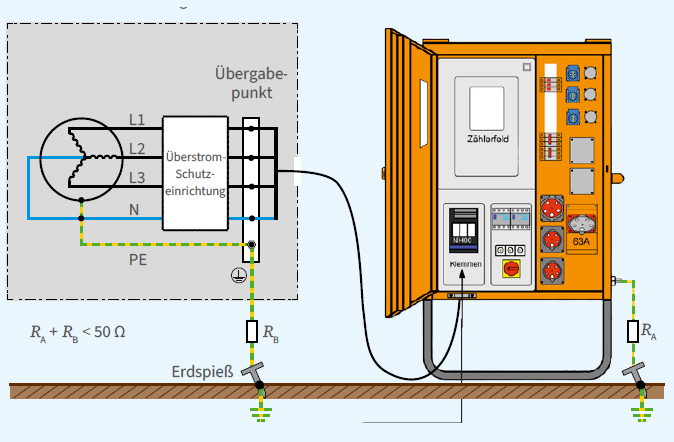
Abb. 17 Stromerzeuger als Übergabepunkt und angeschlossener Baustromverteiler
IT-Systeme werden im Regelfall verwendet, wenn eine erhöhte Versorgungssicherheit gefordert wird, z. B. Pumpen der Grundwasserhaltung oder Löscheinrichtungen, also beim Auftreten des ersten Fehlers die Stromversorgung aufrechterhalten werden soll. Dazu muss eine IMD das Auftreten des ersten Fehlers zwischen einem aktiven Teil und Körpern oder gegen Erde durch ein hörbares oder sichtbares Signal melden. Der Fehler ist umgehend durch eine Elektrofachkraft zu beheben. Die Anlage darf jedoch bis zur Fehlerbehebung weiterbetrieben werden.
Bei Auftreten eines zweiten Fehlers an einem anderen aktiven Leiter muss die automatische Abschaltung erfolgen.
IT-Systeme sind durch eine Elektrofachkraft zu errichten, weil auch hier die Funktion der Schutzmaßnahmen nach VDE 0100-410 von der Ausführung der Erdverbindung (Erdspieß) abhängt.
Alle elektrischen Betriebsmittel der Schutzklasse I müssen durch einen Schutzleiter miteinander und mit dem Anlagenerder verbunden sein (siehe Abbildung 18).
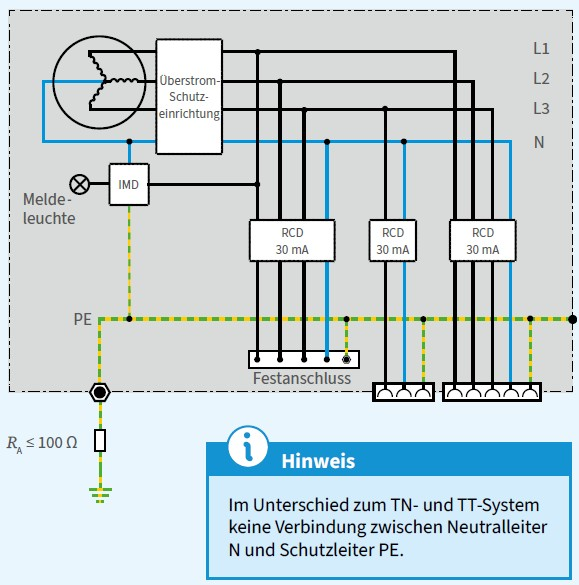
Abb. 18 IT-System mit IMD zur Anzeige/Meldung des ersten Fehlers und Abschaltung durch RCD beim Auftreten eines zweiten Fehlers
Wird die Niederohmigkeit der in Abbildung 18 dargestellten Erdverbindung nicht durch eine Elektrofachkraft überprüft, ist die elektrische Sicherheit vergleichbar mit der Ausführung "B". Die Meldung des ersten Fehlers ist dann nicht zuverlässig gegeben.
Bei unbekannter (oder ungeeigneter) Schutzmaßnahme am Stromerzeuger kann durch einen nachgeschalteten Trenntransformator nach VDE 0570-2-4 die Schutzmaßnahme Schutztrennung realisiert werden. Dabei darf an einen Trenntransformator bzw. an jede Sekundärwicklung eines Trenntransformators auf Bau- und Montagestellen nur ein Verbrauchsmittel angeschlossen werden.
Ist die Schutzmaßnahme Schutzkleinspannung (SELV) erforderlich, kann diese durch einen nachgeschalteten Sicherheitstransformator nach VDE 0570-2-6 realisiert werden.
Ein Bereich mit begrenzter Bewegungsfreiheit in leitfähiger Umgebung liegt vor, wenn eine Person mit ihrem Körper großflächig in Berührung mit der Umgebung stehen kann, die Möglichkeit der Unterbrechung dieser Berührung eingeschränkt ist und die Umgebung im Wesentlichen elektrisch leitfähig ist (siehe DGUV Information 203-004 und VDE 0100-706).
Aufgrund der erhöhten elektrischen Gefährdung darf nur ein Verbrauchsmittel direkt am Stromerzeuger, Ausführung "A" oder "B", angeschlossen werden. Weitere Verbrauchsmittel müssen jeweils über einen separaten Trenntransformator angeschlossen werden (siehe auch Abbildung 11).
Die Trenntransformatoren sind außerhalb des leitfähigen Bereiches aufzustellen.
Die Länge der Zuleitung zum Trenntransformator darf maximal 4 m betragen.
Als elektrische Verbrauchsmittel sind sowohl Geräte der Schutzklasse I als auch der Schutzklasse II zulässig. Aufgrund der verstärkt ausgeführten Isolierung werden Geräte der Schutzklasse II (schutzisolierte Ausführung) empfohlen.
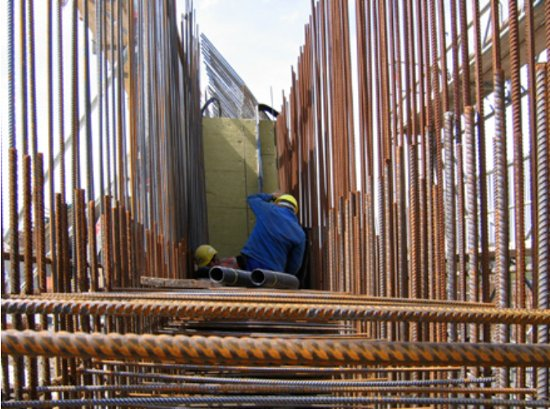
Abb. 19 Beispiel für erhöhte elektrische Gefährdung